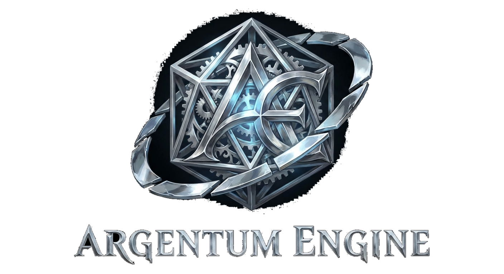
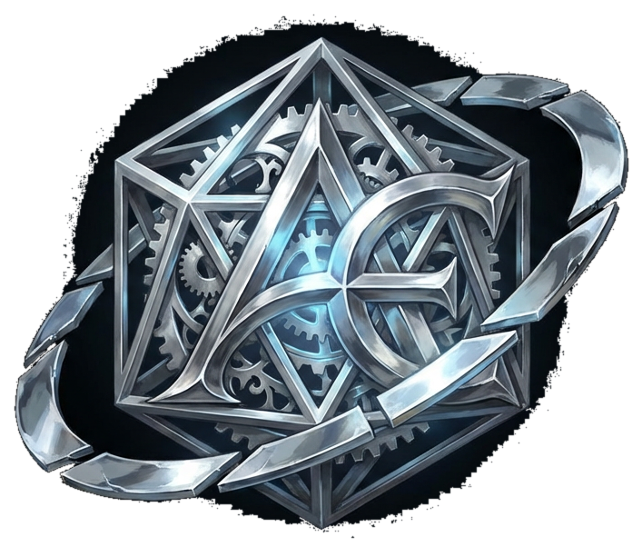
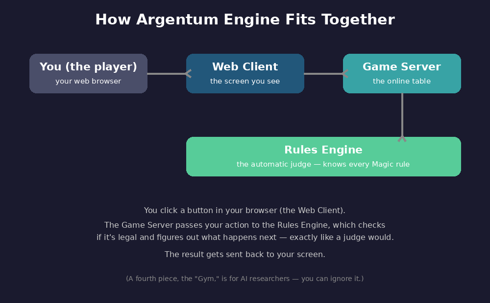
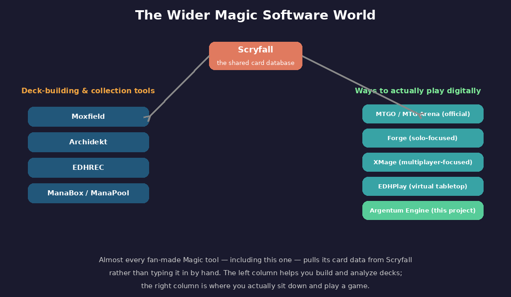
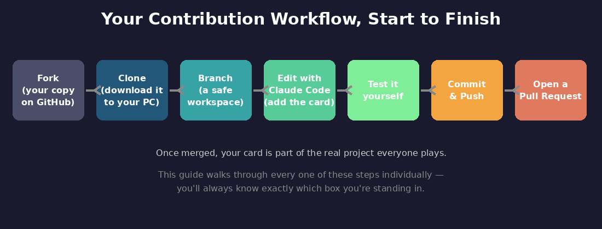
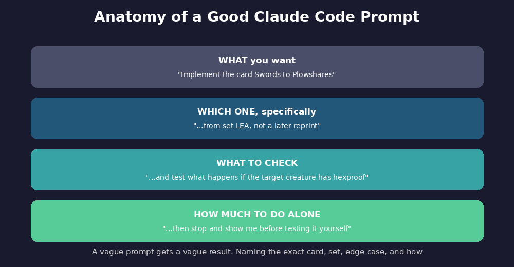
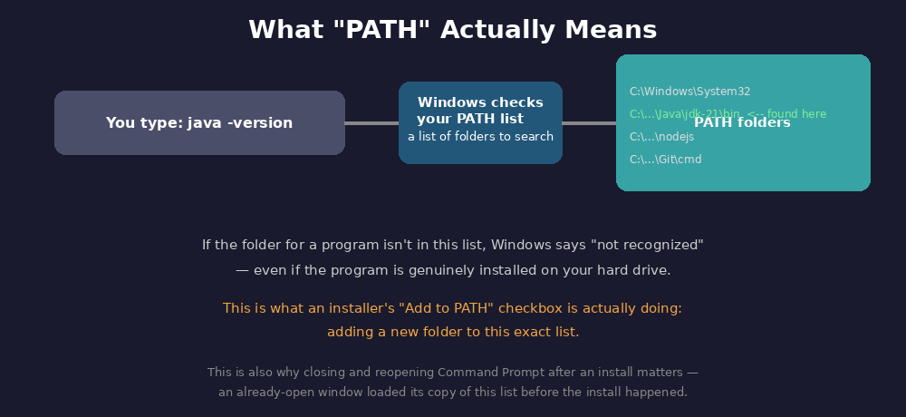

◆ Open-Source Magic: The Gathering Rules Engine ◆

◇ The Official Contributor Guide ◇
Everything you need, start to finish — zero assumptions, every term explained, every step numbered.

ARGENTUMENGINE
Everything you need, start to finish — zero assumptions, every term explained, every step numbered.
Argentum is building one of the most ambitious open-source projects in the history of Magic: The Gathering: a free, open-source rules engine and digital play platform designed to make every card ever printed playable online under the real rules of the game. Thousands of cards are already implemented, and more are added every day. That's where you come in.
Most new contributors begin by implementing cards, and that's exactly what this guide prepares you to do. Along the way, you'll learn the tools, workflow, and development practices behind Argentum. As your experience grows, you'll also have opportunities to contribute bug fixes, engine improvements, new features, and other enhancements across the project.
If you know Magic but have never written software before, we'll teach you everything you need to get started.
This guide assumes you know Magic: The Gathering, not software development. Every technical term is explained the first time it appears, and every hands-on task is broken into clearly numbered steps, so you'll always know exactly where you are.
Parts 1–4 introduce the project, the workflow, and the terminology you'll need. Part 5 begins the hands-on work, with every section after that building toward your first implemented card. If you'd rather learn by doing, start with Quick Start below and return to the earlier sections whenever you need more context.
/ anywhere on the page to jump here.Already comfortable with Git, GitHub, and a terminal? Here's the condensed path. Each step links to the full section if you need more detail.
mise (see the callout at the top of Part 9).wingedsheep/argentum-engine.just init, then just server and just client in separate terminals — see Part 16.add-card skill for your chosen card — see Part 18 for the full pipeline, including testing and review.New to Magic's software side, or to Git and terminals entirely? Skip this and start at Part 1 — the full guide assumes zero prior knowledge and walks through every click.
Almost everything here is free, with one exception tied to how this project actually works: Argentum Engine's contribution tools rely heavily on AI coding assistants. The project originally standardized on Claude Code specifically, and now also supports other frontier-LLM tools (like Codex) through a file called AGENTS.md — you're not locked into one option (more on this in Part 14).
This guide uses Claude Code as its default, tested path — Pro at $17/month billed annually (~$200 upfront) or $20/month billed monthly, with no free option. Whichever frontier-LLM tool you end up using, budget for a real chance you'll need to pay for it: free tiers generally aren't capable enough for the kind of sustained, multi-step work this project's card-implementation skills require. Docker is optional and free for personal use if you do install it.
A quick note before you start reading: this is a reference, not a test. Skim it once so the words are vaguely familiar, then move on — you are not expected to remember all of this. Every term reappears with its explanation the first time it actually matters, and this list will still be here to jump back to.
git --version, java -version, and so on) are identical either way; only the app you type them into differs.cmd) instead, since this guide's commands are all written for Command Prompt specifically.just tool does this for you.localhost:8080 means "this computer, door 8080.".env file — a settings file you won't need to edit by hand.just.The big idea: Argentum Engine is hobbyist-built software (unaffiliated with Wizards of the Coast) that plays Magic by the real Comprehensive Rules, so people can draft, build decks, and play real games online for free. It's already live at magic.wingedsheep.com. We're setting up a copy on your computer so you can help teach it new cards.

The four pieces, in Magic terms: 1. Rules Engine — an automatic head judge. Knows every rule, resolves the stack, decides legality. 2. Game Server — "the table." Lets people connect and share a game over the internet. 3. Web Client — the actual screen you click on. 4. Gym — irrelevant to you; it's for AI researchers training bots.
What's already playable at magic.wingedsheep.com today, straight from the project's own feature list: - Drafting — host booster drafts with up to 8 players, then build a deck from what you opened. - Play — full games against friends, with the stack, combat, triggers, and state-based actions enforced automatically. - Free-for-All Multiplayer — 2–6 players at one shared table (not a 2-player bracket), matching real multiplayer rules (Comprehensive Rule 806). Eliminated players are removed while the rest of the table plays on. - An AI opponent — a built-in bot works instantly with no setup, or an optional more advanced AI that uses a language model for its decisions.
This Part is genuinely optional — nothing in it is required to set up the project or submit your first card. If you'd rather get moving, skip straight to Part 4 and come back here later.
You know Magic deeply as a player. This section is a primer on the software side of the hobby — the tools and sites the online Magic community has built, since you'll see these names come up and it helps to know what they actually are and how they relate (or don't) to what we're building.

Scryfall is the answer, almost universally. It's a free, community-run database containing essentially every Magic card ever printed — full rules text, official rulings, and card images — accessible by any piece of software through something called an API (explained in the glossary: a structured way for software to ask for data). It operates under Wizards of the Coast's official Fan Content Policy, meaning it's explicitly sanctioned to exist even though it isn't run by WotC itself.
This matters directly to what you're doing: when the add-card skill "looks up the card," it is specifically querying Scryfall to pull the real, current, correct card text — the same source basically every tool below also uses, so you're not learning some Argentum-specific data source, you're learning the same one the whole hobbyist ecosystem shares.
These don't let you play a game — they help you build, analyze, and track decks and collections.
The one rule that matters most: the maintainer calls it "no slop PRs." Don't submit anything you haven't personally tested and read through. A small, tested change beats a big unverified one.

What a good submission looks like, in order of importance to the reviewer: 1. Faithful to the card's real rules text (checked against Scryfall — see Part 3). 2. Reuses existing building blocks instead of reinventing something. 3. Actually tested — loaded and played, not just "looks right." 4. Feels right to play — visible triggers, clear prompts. 5. Scoped to one card per submission (safest for a first contribution).
The actual pipeline, which Part 18 walks you through hands-on: run add-card → run generate-scenario and manually play the result → check it feels right from both seats → for anything nontrivial, run review-changes.
The rule that applies to you specifically: the maintainer explicitly rejects PRs where it's clear the human didn't actually verify the AI-generated work. Using Claude Code is fine and encouraged — but you personally need to have read every line and played the card before opening the PR.
Where to ask questions: the Discord's #dev channel for "would you accept a PR that does X?", #showcase for sharing what you've built, general channels for playing and bug reports.
The license: MIT — one of the most permissive licenses that exists, which is why forking (Part 15) requires no special permission.
That's everything you need to know before touching a keyboard. From here on, every remaining Part is something you actually do, in order, starting with a simple check of what's already on your computer.
cmd, press Enter — this opens Command Prompt. Mac: open Terminal (Applications > Utilities > Terminal, or Spotlight search "Terminal"). Every command in this guide works identically either way — just substitute "Terminal" wherever the guide says "Command Prompt."git --version and press Enter.java -version and press Enter.node --version and press Enter.just --version and press Enter.Accounts are done. Next come the actual software installs — four short Parts, one tool each, and you'll check your own work after every one.
miseParts 9 through 12 walk through installing Git, Java, Node, and just one at a time by hand — good for understanding what's happening, but slower than it needs to be if you're comfortable with a terminal. mise is a tool that installs and manages all of these for you in a few commands, and it also sidesteps most of the PATH problems covered in Part 20.
Windows: winget install jdx.mise
Mac: brew install mise (or curl https://mise.run | sh)
Then, either platform:
mise use -g node@latest
mise use -g java@latest kotlin@latest
mise ls
If you use this, you can skip straight past Steps 35–68 (Parts 9–12) — just confirm git, java, node, and just all show version numbers, then jump to Step 69. If you'd rather follow the guided click-by-click path instead, continue below.
Mac note for the steps below: the click-through steps in Part 9 are written for Windows. On a Mac, the simplest path for Git specifically is to just run git --version in Terminal — macOS will usually offer to install it automatically (via Xcode Command Line Tools) if it's missing. Accept the prompt, wait for it to finish, then skip straight to Step 44 to verify. Homebrew (brew install git) works too, if you'd rather.
git work in Command Prompt, why we skip Git Bash.git --version — confirm a version number appears. If not, see Part 20.Mac: the steps below are written for Windows. On a Mac, either use mise use -g java@latest from Part 9's callout, or run brew install openjdk@21 in Terminal — Homebrew handles PATH automatically, no manual setup needed. Otherwise, adoptium.net (Step 45) also offers a macOS .pkg installer that works almost identically to the Windows steps below, just without the PATH checkboxes (macOS handles that step itself).
.msi file.java -version.Mac: the steps below are written for Windows. On a Mac, either use mise use -g node@latest from Part 9's callout, or run brew install node in Terminal. Otherwise, nodejs.org (Step 56) also has a macOS installer that works the same way as the Windows steps below.
.msi file.node --version — confirm v18.x.x or higher. If not, see Part 20.Mac: winget (Step 63) is Windows-only. On a Mac, run brew install just in Terminal instead, then skip to Step 68 to confirm it worked.
winget install --id Casey.Justjust --version.Every dependency is installed. Two Parts stand between you and your own copy of the project: getting Claude Code itself set up, then actually fetching the code.
A quick note on why this Part exists specifically: Argentum Engine's contributor tooling was originally built around Claude Code alone. It's since grown to support other frontier-LLM coding tools too, through a file in the repo called AGENTS.md — so if you already use something like Codex, that can work here as well. This guide standardizes on Claude Code because it's what the rest of these steps are written and tested against, not because it's the only option.
github.com/YOUR-USERNAME/argentum-engine — your copy.cd Desktop and press Enter.git clone, then right-click to paste the copied URL, so it reads:
git clone https://github.com/YOUR-USERNAME/argentum-engine.gitcd argentum-engine and press Enter.cd Desktop\argentum-engine gets you back.You've now got a real local copy of a Kotlin project. Claude Code can read and write these files for you, but at some point you'll likely want to just look around yourself — a proper code editor makes that much easier than a plain text editor. IntelliJ IDEA (free Community Edition) is Kotlin's native IDE, built by the same company that made the language; VS Code is a lighter, more general-purpose alternative. Either is optional but worth having open alongside Claude Code once you're browsing generated files in Part 18.
just init and press Enter.just server and press Enter — log text will scroll. Leave this window open.cd Desktop\argentum-engine and press Enter.just client and press Enter. Leave this window open too.The project is running on your machine. Before you touch a real card, five minutes on how to actually get good results out of Claude Code will save you a lot of back-and-forth.
Before diving into Part 18, a few minutes on how to actually get good results out of Claude Code — since the quality of what it builds depends heavily on how clearly you ask.

Be specific about which exact thing you want. "Implement Swords to Plowshares" is weaker than "Implement Swords to Plowshares from set LEA" — there can be reprints, and the skill needs to know which printing to treat as canonical (this came up back in Part 4 and 15's earlier discussion of reprints).
Tell it what to actually test, not just the obvious case. As a strong Magic player, you already know the interesting rules interactions on any given card — a "may" ability someone declines, a target that becomes illegal, an effect interacting with something like hexproof or indestructible. Naming that specific interaction when you ask for a test scenario (Step 114 in Part 18) gets you a far more useful test than "test that it works."
Tell it how much to do before checking back with you. Claude Code will happily run for a while on its own. If you want to review before it moves to the next step, say so explicitly — e.g., "implement this, then stop and show me before testing." If you're comfortable letting it proceed further unsupervised, say that instead.
Treat it like a conversation, not a single command. If what it produces isn't quite right, you don't need to start over — just tell it what's wrong and ask it to fix that specific thing. It has the context from what it just did.
Ask it to explain anything you don't understand. If Claude Code shows you a chunk of Kotlin and you don't follow what it does, just ask — "explain what this part does" is a completely normal, expected question, not an interruption.
When in doubt, ask a clarifying question yourself before it starts. If you're not sure which set code to use, or which of two similar cards you mean, say so rather than guessing — "I'm not sure if this should go in DOM or a later set, can you check?" is a better opener than picking one and hoping.
This applies to any AI assistant, not just this project. These same habits — being specific, naming the actual edge case you care about, saying how much autonomy you want, treating it as back-and-forth — carry over directly to using ChatGPT, Claude in a browser, or any other AI tool you pick up later.
Time to put it into practice — this next Part is where everything so far actually comes together.
argentum-engine folder from Step 94.#dev whether it's a reasonable first pick.Please run the add-card skill for "Card Name" in set CODE (using Part 17's guidance — be specific about the set).Please run the generate-scenario skill to test [the specific interesting interaction you identified]just server and just client are still running (Steps 97, 100).http://localhost:5173Please run the review-changes skill on my changesgit checkout -b my-first-cardgit add .git commit -m "Add [Card Name]"git push origin my-first-cardgithub.com/YOUR-USERNAME/argentum-engineThat's the complete loop, start to finish — you've gone from a blank machine to a real submitted contribution. The two remaining Parts are reference material you'll dip into as needed, not more reading to do now: Troubleshooting for when something doesn't match this guide, and an Index if you need to jump back to a specific concept.

A general note before the Windows-specific fixes below: everything in this Part is written against Windows' Command Prompt and Environment Variables panel. On a Mac, the same underlying problem (PATH) shows up far less often, because Homebrew and mise (see Part 9) configure it automatically. When it does happen, the fix is almost always the same first step as Windows — fully quit and reopen Terminal — or checking ~/.zshrc or ~/.zprofile for a line your installer added. If you're stuck on a Mac-specific version of one of these, Discord's #dev is the right place to ask.
just)C:\Program Files\Eclipse Adoptium\jdk-21.x.x-hotspot\bin; for Node, typically C:\Program Files\nodejs\.An old Java install can shadow the new one in PATH. 1. Try the "not recognized" steps above first (sometimes fixes it). 2. Open Environment Variables as above, edit Path. 3. You'll likely see two Java entries — select the JDK 21 one and click Move Up so it's listed before the old one. 4. OK everything, restart Command Prompt, recheck. 5. To remove the old version instead: Windows Settings → Apps → Installed apps → find the old Java entry → Uninstall → restart your computer.
npm specifically says "not recognized" even though node worksThis is a known, fairly common Node.js quirk on Windows (not unique to you — it shows up regularly in Node's own bug tracker). Try, in order:
1. The standard "not recognized" steps above.
2. If it persists, fully uninstall Node (Windows Settings → Apps → Installed apps → Node.js → Uninstall), then also manually delete any leftover folder at C:\Program Files\nodejs if it still exists, restart your computer, and reinstall Node from Part 11 fresh.
3. If it still fails after that, this is a good one to bring to Discord's #dev with the exact error text — it can have a few different underlying causes.
just init, just client, or any Node-related stepWindows has an old limit on how long a file path can be, and Node.js projects sometimes create deeply nested folders inside node_modules that exceed it. If you see an error mentioning a very long file path:
1. Try moving the whole project folder somewhere shorter and closer to the drive root — e.g., instead of Desktop\argentum-engine, use C:\argentum-engine. You'd redo Step 91 as cd C:\ (instead of cd Desktop) before cloning.
2. Alternatively, enable long path support at the Windows system level (requires admin access): Start menu → type "gpedit.msc" (if available on your Windows edition) → Computer Configuration → Administrative Templates → System → Filesystem → enable "Enable Win32 long paths." If gpedit.msc isn't available on your Windows edition, this can also be set via the Registry Editor, but that's a good one to ask for direct help with in Discord's #dev rather than doing solo your first time.
just server or just clientThis means something is already using port 8080 or 5173 — often a previous copy of the server/client that didn't fully close.
1. In Command Prompt, run: netstat -ano | find "8080" (swap in 5173 for the client) — this lists the process using that port, ending with a number called a PID.
2. Run tasklist /FI "PID eq <the number from step 1>" to see the program's name.
3. If it's safe to close (almost always a leftover java.exe or node.exe from an earlier session), run taskkill /F /IM java.exe or taskkill /F /IM node.exe as appropriate — note this closes all running copies of that program, so make sure nothing else important is using it first.
4. Try just server / just client again.
Occasionally security software flags a legitimate installer or blocks part of an install silently. If an install seems to "complete" but the program still isn't found afterward, or a download keeps disappearing: 1. Check your antivirus/Windows Defender's quarantine or blocked-items list for the file you just downloaded. 2. If it's there, restore it and try again — official installers from git-scm.com, adoptium.net, and nodejs.org are safe sources. 3. If your antivirus has a temporary "allow" option for a specific download, that's the safer choice over fully disabling protection.
cd Desktop\argentum-engine and rerun the matching command.http://localhost:5173 (not 8080 — that's the server, not what you visit).#dev — a real screenshot beats any description.If your actual screen doesn't match this guide — different button placement, extra prompts — the software's own installer likely changed slightly since this was written. Screenshot what you're actually seeing and ask about it directly rather than guessing.
mise (version manager) — Part 9just command runner, install — Part 12